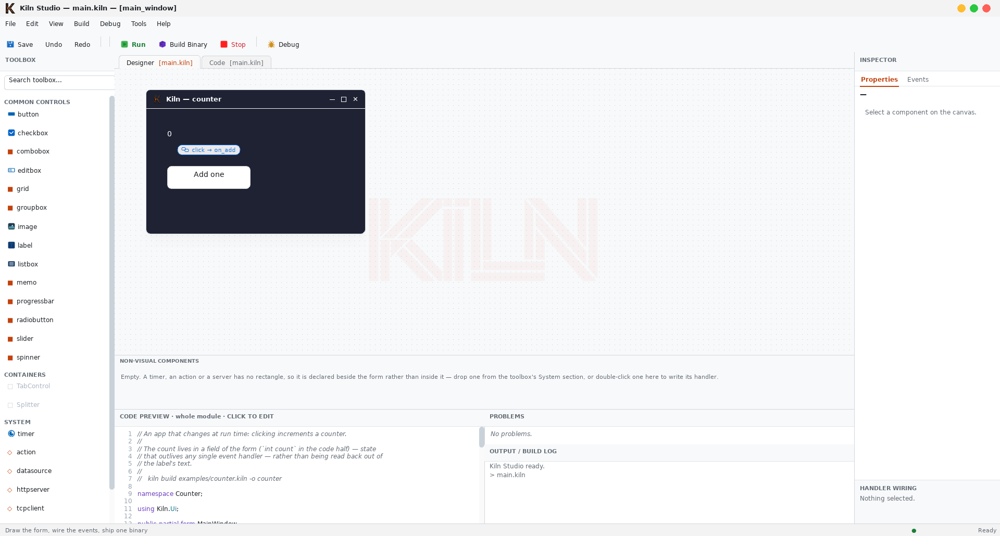

An open implementation of Easy Programming Language (易语言) — a RAD environment for desktop software. Lay out a window, wire a button to a subroutine, press Run. What comes out is an ordinary native executable.
One file, two views
module counter use ui var count: int = 0 form main_window title = "Kiln — counter" width = 420 height = 240 background_color = "#1e2233" label count_label text = "0" left = 40 top = 40 color = "#ffffff" end button add_button text = "Add one" left = 40 top = 110 width = 160 height = 44 on click: on_add end end sub on_add increment count count_label.text = "{count}" end
There is no designer file. Drag the button and those numbers change; edit the numbers and the canvas moves.
What makes it different
The form you draw and the file you edit are one thing. There is no designer format that could drift from your code, because there is no designer format.
Your project is compiled and linked with the system linker, and the linker drops every command you never call. Nothing is unpacked at start-up and there is no interpreter inside.
Easy Programming Language showed that drawing an application and compiling it to a real executable is the right way to build desktop software. Kiln implements that model as open source, in English, on an inspectable toolchain — a fresh implementation, not a clone: it does not run existing EPL programs.
The same source builds as a console program, a windowed program, a shared library or a static library. A build option, not a rewrite.
The language
One way to call things. No pointers, no manual memory management, no
ceremony. Assignment is a statement rather than an expression, so
if x = 5 compares — it cannot silently assign.
Whole numbers, doubles, booleans and text; arrays, bytes, records and
dictionaries; subroutines with parameters and return values. Every
position counts from 1, so 0 is free to mean not
found. A command that fails returns a sentinel and leaves the
reason in an error slot — there are no exceptions to catch.
Memory is reclaimed while a program runs, not at exit, so a server or a window that stays open for days settles at what it is actually holding.
module hello target console sub main call print_text("Hello from Kiln.") let answer: int = 6 * 7 call print_text("six times seven is {answer}") end
Build targets
Declare the target in the module, or override it for one build without touching the source. Libraries export their subroutines under their own names, so anything that can call C can link against them.
| Target | Produces |
|---|---|
console | a terminal program |
gui | a windowed program |
sharedlib | .so / .dll / .dylib |
staticlib | .a archive |
Kiln Studio
Design, code, build, run and step through — in one window. Diagnostics come from the compiler itself, and the same language server drives completion, signature help, hover, go-to-definition and find-references in VS Code, Neovim, Helix, Kate and Zed.

Linux on x86-64, with a cross build for Windows. TLS is opt-in and client-side only. The debugger is Linux-only and stops at the statement: breakpoints, stepping, the call stack and variables, but no expression evaluation. Collection pauses the program, and the pause grows with the heap — fine for a server, visible in a game at 60 Hz.
What does work, end to end: design a form, wire an event, build it, run it, step through it, and ship the binary — and a console program, a web server, a database client or a library the same way.